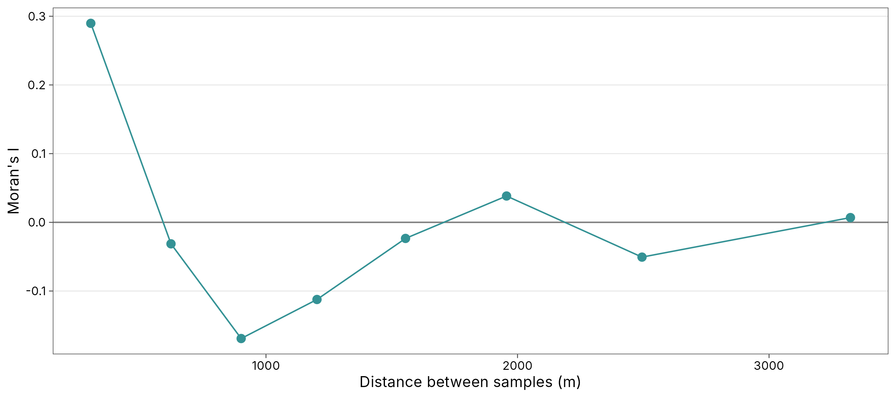
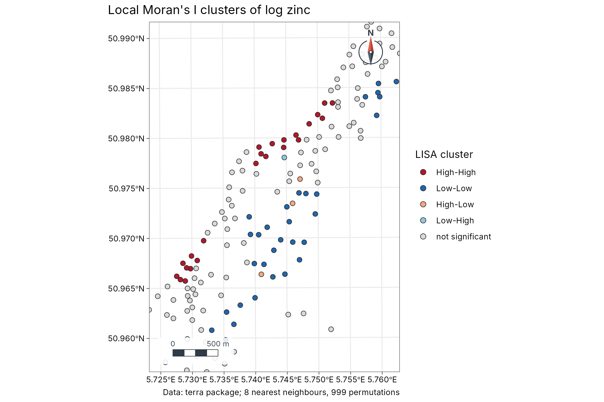
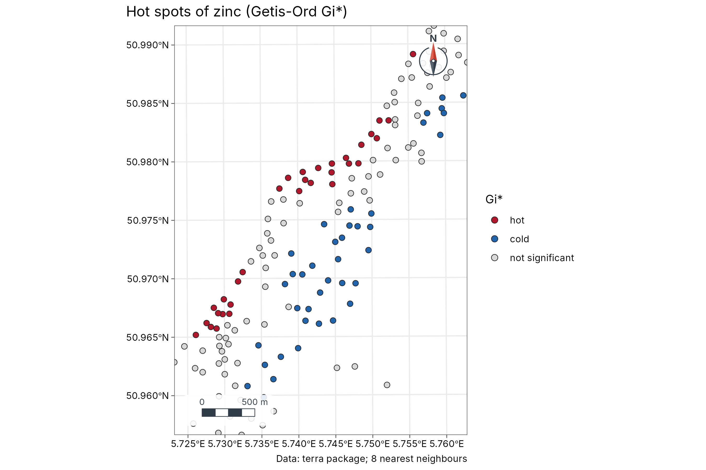

3. Spatial autocorrelation: Moran's I, LISA and hot spots
guide-03-autocorrelation.RmdThe concept
“Everything is related to everything else, but near things are more related than distant things.” (Tobler 1970)
Spatial autocorrelation is the degree to which values at nearby places resemble each other. It matters for two reasons:
- It is often the finding. Clusters of disease, pollution, species richness or poverty are what we want to locate.
- It breaks ordinary statistics. Nearby samples are not independent, so a regression or t-test on spatial data overstates the evidence (too-small p-values) unless the autocorrelation is accounted for.
Two questions, two kinds of statistic:
| Question | Statistic | Scale | tidymapr |
|---|---|---|---|
| Is there clustering anywhere in the study area? | Moran’s I | Global: one number | geo_moran() |
| Where are the clusters and outliers? | Local Moran’s I (LISA) | Local: one value per site | geo_lisa() |
| Where are the hot and cold spots? | Getis-Ord Gi* | Local: one value per site | geo_hotspot() |
The data
Zinc concentration (ppm) in 155 topsoil samples from the floodplain of the river Meuse, the Netherlands (Rikken and Van Rijn 1993), shipped with terra. Heavy metals arrive with flood water, so we expect high values near the river.
meuse <- terra::unwrap(readRDS(system.file("ex/meuse.rds", package = "terra")))
samples <- sf::st_as_sf(as.data.frame(meuse), coords = c("x", "y"), crs = 28992)
samples$log_zinc <- log(samples$zinc)
summary(samples$zinc)
#> Min. 1st Qu. Median Mean 3rd Qu. Max.
#> 113.0 198.0 326.0 469.7 674.5 1839.0Zinc is strongly right-skewed (the mean is well above the median), so we analyse its logarithm: these statistics compare values with their mean, and a few extreme values would otherwise dominate.
1. Global Moran’s I
Theory
is the value at site , the mean and the spatial weight between sites and ; tidymapr uses inverse distance, , so close pairs count most. The numerator adds up the products of deviations for neighbouring pairs: it is large and positive when neighbours deviate from the mean in the same direction.
| Value of I | Meaning |
|---|---|
| Clearly above (close to 0) | Positive autocorrelation: similar values cluster |
| Close to | No spatial pattern: values are arranged as if at random |
| Below | Negative autocorrelation: neighbours differ (a checkerboard) |
Moran’s I is not bounded by −1 and 1 like a correlation, and its size depends on the weights, so judge it against its expectation and its permutation p-value: the values are shuffled among the sites 999 times, and the p-value is the share of shuffles giving an I at least as extreme as the observed one.
Run it
m <- geo_moran(samples, log_zinc, nperm = 999, correlogram = TRUE, bins = 8, seed = 1)
m
#> # A tibble: 1 × 7
#> statistic expectation variance p.value n nperm method
#> <dbl> <dbl> <dbl> <dbl> <int> <dbl> <chr>
#> 1 0.119 -0.00649 0.000113 0.001 155 999 Moran's I (inverse-distanc…Interpretation. I = 0.119 against an expectation of -0.0065 under randomness, with a permutation p-value of 0.001. Log zinc is positively autocorrelated: samples near each other have similar concentrations.
The correlogram: over what distance?
The correlogram computes Moran’s I separately for pairs in successive distance bands. It shows the range of the pattern: the distance up to which neighbours resemble each other.
cg <- attr(m, "correlogram")
knitr::kable(cg, digits = 3, caption = "Moran's I by distance band (distance in metres, n = number of pairs).")| bin | distance | moran | n |
|---|---|---|---|
| 1 | 303.485 | 0.290 | 1492 |
| 2 | 622.335 | -0.031 | 1492 |
| 3 | 901.330 | -0.169 | 1492 |
| 4 | 1202.768 | -0.112 | 1492 |
| 5 | 1554.735 | -0.023 | 1491 |
| 6 | 1956.427 | 0.038 | 1492 |
| 7 | 2494.927 | -0.051 | 1492 |
| 8 | 3323.580 | 0.007 | 1492 |
ggplot2::ggplot(cg, ggplot2::aes(distance, moran)) +
ggplot2::geom_hline(yintercept = 0, colour = "grey50") +
ggplot2::geom_line(colour = "#349295") +
ggplot2::geom_point(colour = "#349295", size = 2.5) +
ggplot2::labs(x = "Distance between samples (m)", y = "Moran's I") +
theme_tidymapr()
Interpretation. Moran’s I is highest in the first band (about 303 m) and falls to zero within about 600 m. Beyond that, samples are no more alike than random pairs; negative values at middle distances reflect the contrast between the river bank and the inland floodplain. This range is useful later: it tells kriging (Chapter 4) how far to look for neighbours.
2. Local Moran’s I (LISA)
Theory
Anselin (1995) split global Moran’s I into a contribution from each site:
The sum is the spatial lag: the weighted average
deviation of site
’s
neighbours (here, its k = 8 nearest neighbours). Comparing
the site with its neighbourhood gives four types, tested by conditional
permutation:
| Cluster | Site | Neighbours | Meaning |
|---|---|---|---|
| High-High | High | High | Core of a hot cluster |
| Low-Low | Low | Low | Core of a cold cluster |
| High-Low | High | Low | Spatial outlier: a high value among low ones |
| Low-High | Low | High | Spatial outlier: a low value among high ones |
| not significant | No evidence of local pattern |
lisa <- geo_lisa(samples, log_zinc, k = 8, nperm = 999, seed = 1)
knitr::kable(count(sf::st_drop_geometry(lisa), cluster), caption = "Number of samples in each LISA class.")| cluster | n |
|---|---|
| High-High | 23 |
| Low-Low | 31 |
| High-Low | 3 |
| Low-High | 1 |
| not significant | 97 |
geo_map(title = "Local Moran's I clusters of log zinc", caption = "Data: terra package; 8 nearest neighbours, 999 permutations") |>
map_points(lisa, fill = cluster, group = "LISA cluster", size = 2.2,
palette = c("High-High" = "#B2182B", "Low-Low" = "#2166AC", "High-Low" = "#F4A582",
"Low-High" = "#92C5DE", "not significant" = "grey85"))
Interpretation. The High-High cluster lies along the north-western edge of the sampled area, on the bank of the Meuse: the soils flooded most often. The Low-Low cluster lies further from the river, to the south-east. The hot and cold spots below show the same split. The few outliers mark local disturbances or measurement differences and deserve a closer look.
3. Getis-Ord Gi* hot spots
Theory
Getis and Ord (1992) compare the sum of values in each site’s neighbourhood (including the site itself, hence the star) with what is expected if values were spread at random:
is a z-score: above +1.96 is a hot spot and below −1.96 a cold spot at the 5 % level. Unlike LISA, Gi* does not detect outliers; it answers only “is this area high or low overall?”, which makes it easier to explain to non-specialists.
hot <- geo_hotspot(samples, log_zinc, k = 8)
knitr::kable(count(sf::st_drop_geometry(hot), hotspot), caption = "Hot and cold spots (Gi*, 5 % level).")| hotspot | n |
|---|---|
| hot | 31 |
| cold | 39 |
| not significant | 85 |
geo_map(title = "Hot spots of zinc (Getis-Ord Gi*)", caption = "Data: terra package; 8 nearest neighbours") |>
map_points(hot, fill = hotspot, group = "Gi*", size = 2.2,
palette = c(hot = "#B2182B", cold = "#2166AC", "not significant" = "grey85"))
Choosing neighbours and handling many tests
| Choice | Effect | Advice |
|---|---|---|
k nearest neighbours |
Every site has the same number of neighbours | Good default for irregular samples; try k from 4 to 12
and check the result is stable |
dist (a distance band) |
Neighbours within a fixed distance | Use when the process has a known reach, e.g. the correlogram’s range |
| Many local tests | With 155 tests at the 5 % level, about 8 can be “significant” by chance | Lower alpha (e.g. 0.01) or describe clusters, not
single points |
How to report it
Log-transformed zinc showed significant positive spatial autocorrelation (Moran’s I = 0.12, inverse-distance weights, permutation p = 0.001, 999 permutations). The correlogram showed autocorrelation up to about 600 m. Local Moran’s I (8 nearest neighbours) identified 23 samples in High-High clusters along the river and 31 in Low-Low clusters inland. Analyses used tidymapr, whose statistics equal spdep’s.
References
Anselin, L. (1995). Local indicators of spatial association: LISA. Geographical Analysis, 27, 93-115.
Getis, A. and Ord, J. K. (1992). The analysis of spatial association by use of distance statistics. Geographical Analysis, 24, 189-206.
Moran, P. A. P. (1950). Notes on continuous stochastic phenomena. Biometrika, 37, 17-23.
Rikken, M. G. J. and Van Rijn, R. P. G. (1993). Soil pollution with heavy metals. MSc thesis, Utrecht University.
Tobler, W. R. (1970). A computer movie simulating urban growth in the Detroit region. Economic Geography, 46, 234-240.